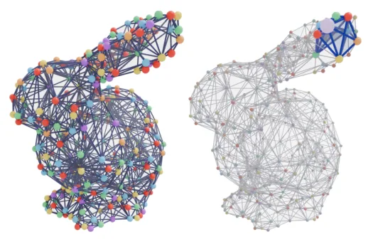
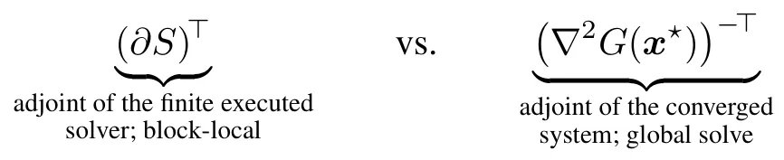
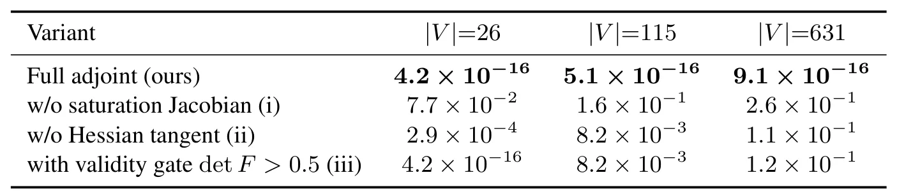
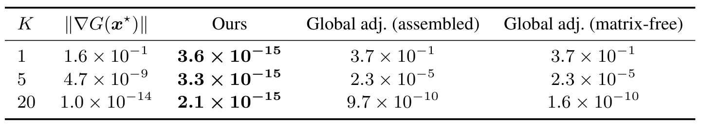
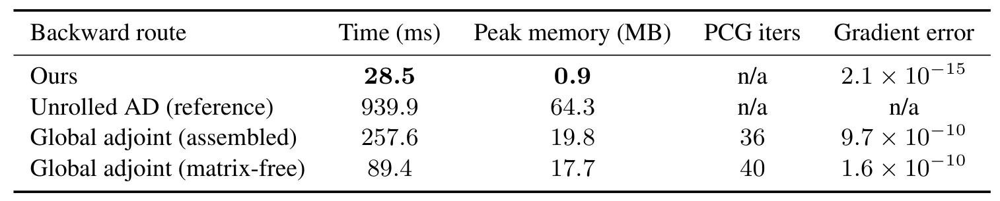
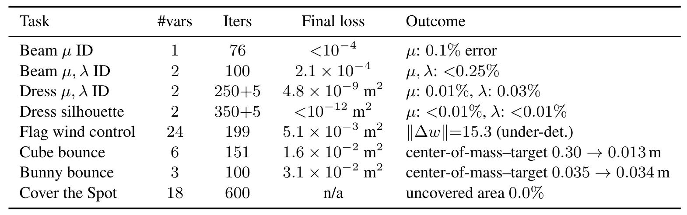

对求解器求导，而非对方程求导：块隐式仿真的反向扫描伴随Differentiate the Solver, Not the Equation: Reverse-Sweep Adjoints for Block Implicit Simulation
对可微 BA、校准和迭代优化器具有潜在方法价值，效率数据强；当前验证集中在物理仿真，向 SLAM/因子图迁移仍需实证。
一句话工作总结
把有限步局部隐式求解器本身镜像成反向局部伴随扫描，以小规模局部求解替代全局伴随系统。
摘要
论文提出 solver-level differentiation，直接对实际执行的有限步 block implicit solver 求导，而不是对收敛方程做隐式求导。当前向求解器由有序局部隐式更新组成时，离散伴随可按相反顺序执行对应局部伴随更新，从而避免构造全局 Jacobian 和求解大规模全局稀疏伴随系统。在 Vertex Block Descent 实例中，反向 colored Gauss-Seidel 仅需局部 3×3 伴随求解；摘要报告其梯度与同一执行轨迹的自动微分达到机器精度，相比 unrolled AD 快 33 倍、显存少 71 倍，并扩展到单 GPU 上 800 万顶点。
Differentiable simulation is a key component in learning, control, and inverse problems, where gradients through nonlinear implicit solvers are required. Existing approaches either rely on unrolled automatic differentiation, whose memory grows with solver depth, or on equation-level implicit differentiation, which assembles global Jacobians and solves large sparse adjoint systems, discarding the locality of the forward solver -- and differentiating the converged equation rather than the finite computation that actually ran. We propose solver-level differentiation, which differentiates the executed solver itself. When a solver is composed of block implicit updates, its discrete adjoint is obtained by applying the corresponding adjoint updates in reverse order, yielding a reverse-sweep formulation whose backward pass mirrors the forward solver. From an operator perspective, the forward pass realizes an approximate inverse through ordered local solves, and the backward applies its transpose through reverse local adjoint solves, constructing no global system. We instantiate this idea on Vertex Block Descent, yielding a differentiable solver whose reverse colored Gauss-Seidel sweeps are composed entirely of local $3\times 3$ adjoint solves. The backward matches automatic differentiation through the identical executed forward to machine precision at every solver depth, where the equation-level adjoint is off by 37% after one sweep; in a controlled same-codebase, same-GPU comparison it is 33x faster and uses 71x less memory than unrolled automatic differentiation; and the same construction is exact on projective dynamics and extended position-based dynamics. We scale differentiable elastodynamics to $10^6$ contact-coupled soft bodies (8M vertices) on one GPU. Overall, this work highlights solver structure as a practical organizing principle for efficient differentiable simulation.
中文解读摘录
- 价值：把可微计算对象从收敛方程改为实际执行的有限步 block implicit solver；反向传播按相反顺序执行局部伴随更新，无需组装全局 Jacobian 或求解全局稀疏伴随系统。
- 结果：在 Vertex Block Descent 上，反向 colored Gauss-Seidel 仅包含局部 3×3 伴随求解；摘要报告与同一执行轨迹的自动微分达到机器精度，相比 unrolled AD 快 33 倍、显存少 71 倍，并扩展到单 GPU 上 800 万顶点规模。
- 关注点：对可微 bundle adjustment、物理约束地图优化和 calibration-by-simulation 有方法启发，但论文实证集中在 elastodynamics；需验证非对称、鲁棒核和稀疏图优化中的适用条件。
- 链接：arXiv · PDF
图表/页面预览
{kind=link}

{kind=link}

{kind=link}

{kind=link}

{kind=link}

{kind=link}
